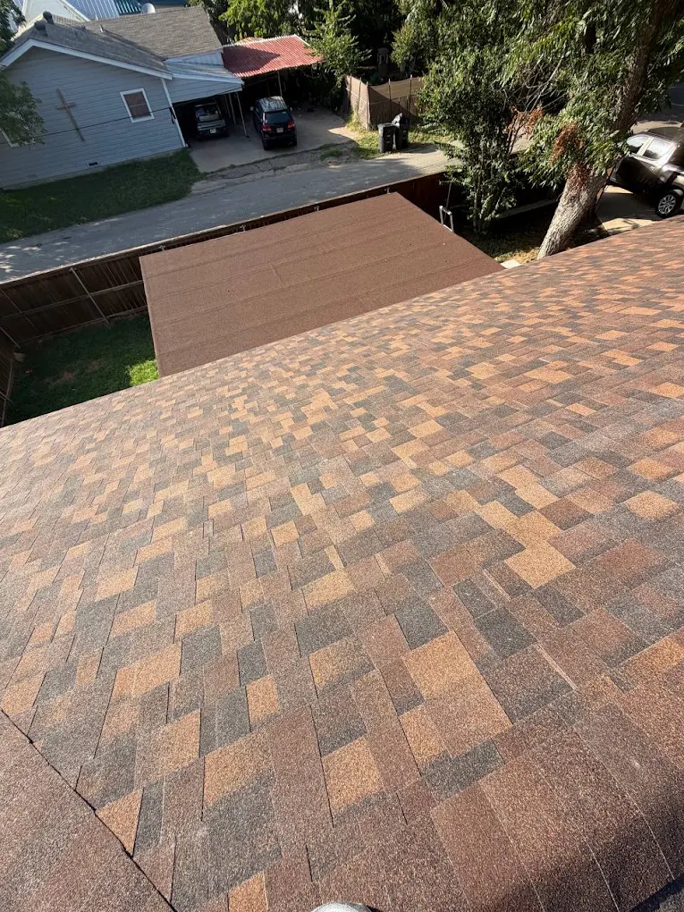
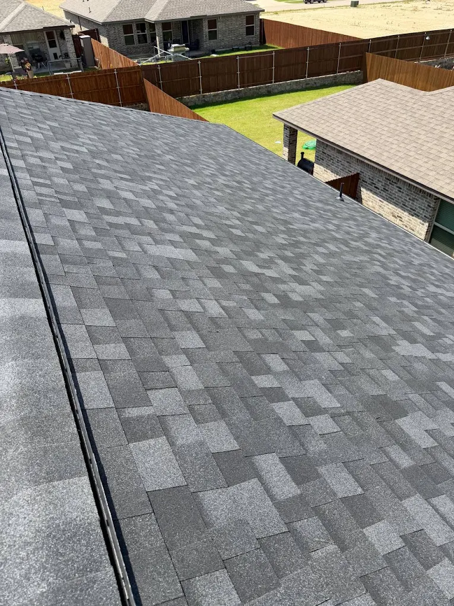
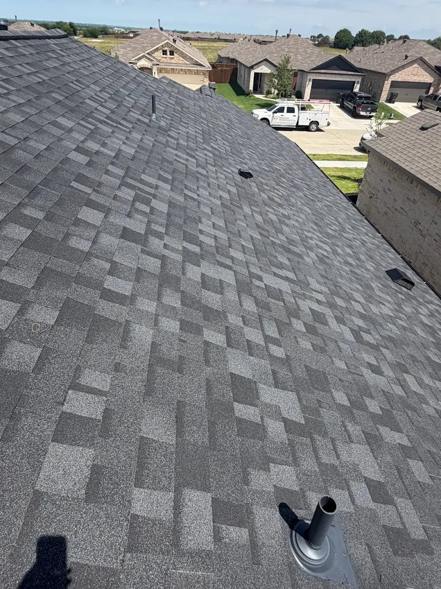

A leak or a few missing shingles doesn't always mean you need a new roof. We find the real source of the issue and fix it — not just what's easy to see.

A leak, a missing shingle, or storm damage isolated to one section of the roof usually doesn't call for a full tear-off. It calls for someone who actually traces the leak back to its source instead of just patching the spot where the water showed up inside the house — because those are rarely the same spot.
We inspect the full roof, not just the reported problem area, so we can tell you honestly whether a repair is the right call or whether the damage is more widespread than it looks from the ground. If it's a repair, we fix it right. If it's not, we'll tell you that too.
We check the entire roof, not just the spot you called about, before recommending anything.
We trace leaks back to where they actually start, not just where the water shows up.
If a repair is the right call, we do it. If it's not, we'll tell you straight, no upsell.

